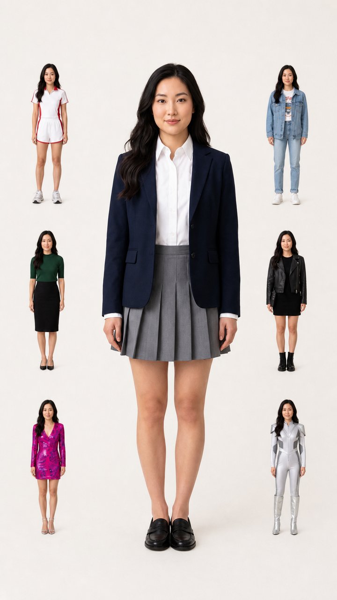

E001
MiniMax H3 · M13
15.083 SEC · 7 LOOKS
用户提供的首条外部生成结果H.264 视频 + AAC 双声道 · 24 fps · 1.82 MB
打开原始 MP4 ↗SKILL / PROMPT ORCHESTRATIONVERSION 1.0.0
选择主体、节奏与转场，观察 Outfit Director 如何锁定身份、组织多造型首帧，并把侧边造型依次“消费”为连续换装时间轴。
REAL 2D VTON / DEMO
页面内置一组人物、服装和预生成结果，帮助理解完整流程；它不是模型推理。上传自己的素材后，结果区会等待后续本机模型。
当前状态：内置虚构样例 · 本地静态资源 · 未调用模型。
PRE-GENERATED VISUAL TEST
这里用预生成造型近似演示女性专项机制 M1、M2、M8、M10；它不是浏览器实时虚拟试衣，也不代表服装 SKU 的精准还原。
三条提示词已经交给外部模型执行。切换 E001 / E002 / E003，可对照 T2V、首帧 I2V、安全区布局、媒体事实、状态机表现和失败边界。
E003 的模型与首帧同时变化；可记录当前输出的直接表现，但不把改善或退化单独归因于安全区布局或 Seedance 2.5。
用户提供的首条外部生成结果H.264 视频 + AAC 双声道 · 24 fps · 1.82 MB
打开原始 MP4 ↗【生成方式】纯文本生成视频 T2V 【目标模型】通用视频模型 【画幅与时长】竖版 9:16，15 秒，单一连续镜头。 【主体】原创中国成年女性，视觉年龄 22–28 岁；始终保持自然东亚面部特征、深色长发、匀称身形、清晰全身比例，从开头到结尾必须是同一个主体。 【场景与机位】简洁摄影棚背景，固定正面全身机位，允许轻微呼吸式推近，完整保留头部、身体和脚部，柔和轮廓光，真实服装面料与发丝细节。 【造型顺序】1. 白衬衫学院风；2. 短款运动套装；3. 牛仔街头风；4. 轻熟通勤装；5. 甜酷黑色套装；6. 亮色派对装；7. 银白舞台装。 【动作与换装】15 秒换装舞蹈，使用 M13 · 侧边激活 + 舞蹈峰值；在 2.0 秒从“白衬衫学院风”换为“短款运动套装”；4.1 秒从“短款运动套装”换为“牛仔街头风”；6.3 秒从“牛仔街头风”换为“轻熟通勤装”；8.5 秒从“轻熟通勤装”换为“甜酷黑色套装”；10.8 秒从“甜酷黑色套装”换为“亮色派对装”；13.0 秒从“亮色派对装”换为“银白舞台装”。换装发生在同一动作峰值，人物位置、脸、身体比例、视线和运动方向保持连续，不切镜头。 【模型适配】按时间顺序理解同一镜头中的服装变化；不要把每套造型拆成互不相关的多个人或多个镜头。 【声音】15 秒卡点舞曲，仅背景音乐。 【补充】固定正面机位，背景保持简洁，强调身份一致性。 【硬性限制】只有一个主体；不要生成拼贴、分屏或侧边人物；不要身份漂移、服装叠穿、双影、肢体变形、镜头跳切、背景突变；最终保持“银白舞台装”完成收尾。
用户提供的第二条外部生成结果H.264 视频 + AAC 双声道 · 24 fps · 11.55 MB
打开原始 MP4 ↗15 秒15 秒换装舞蹈，继承首帧中的女性身份、全部 7 套造型、侧边位置、画面布局和摄影质感。中央主体保持固定正面全身机位，允许轻微呼吸式推近，使用M13 · 侧边激活 + 舞蹈峰值。在 2.0 秒、4.1 秒、6.3 秒、8.5 秒、10.8 秒、13.0 秒依次完成换装；激活顺序为左上 → 右上 → 左中 → 右中 → 左下 → 右下。每个侧边贴图在激活同一帧从原位永久清空，不弹回、不复现；中央始终只有一个主体。换装前后保持重心、视线、手臂轨迹和旋转方向连续，衣摆、发丝或毛发保持重力与惯性。15 秒卡点舞曲，仅背景音乐。最终造型展示至 15.0 秒并完成收尾。固定正面机位，背景保持简洁，强调身份一致性。

这张首帧缩小并内移了六个侧边人物。E003 已使用它，但模型同时改为 Seedance 2.5，因此只能观察当前输出，不能把结果作为严格 E002.1 结论。
用户提供的第三条外部生成结果H.264 视频 + AAC 双声道 · 24 fps · 8.52 MB
打开原始 MP4 ↗15 秒15 秒换装舞蹈，继承首帧中的女性身份、全部 7 套造型、侧边位置、画面布局和摄影质感。中央主体保持固定正面全身机位，允许轻微呼吸式推近，使用M13 · 侧边激活 + 舞蹈峰值。在 2.0 秒、4.1 秒、6.3 秒、8.5 秒、10.8 秒、13.0 秒依次完成换装；激活顺序为左上 → 右上 → 左中 → 右中 → 左下 → 右下。每个侧边贴图在激活同一帧从原位永久清空，不弹回、不复现；中央始终只有一个主体。换装前后保持重心、视线、手臂轨迹和旋转方向连续，衣摆、发丝或毛发保持重力与惯性。15 秒卡点舞曲，仅背景音乐。最终造型展示至 15.0 秒并完成收尾。固定正面机位，背景保持简洁，强调身份一致性。
五个目标按依赖递进。选中目标可查看输入、接入能力、输出与完成标准；页面只把已经存在的能力标为“当前实验”。
TEST C 默认展示人物、服装和预生成结果；上传自定义素材后可沿用本机接口，后续按需接入 CatVTON。
不是替模型生成画面，而是给模型一个更清楚、更可检查的任务结构。
把人物、宠物、卡点和连续舞蹈分开处理，避免规则互相污染。
用户明确要求与参考图优先，系统只补全缺失的低风险字段。
每个侧边造型激活后永久清空，让换装具有可见的空间因果。
集中抑制身份漂移、贴图残留、双影、叠穿和动作断裂。
{kind=link}